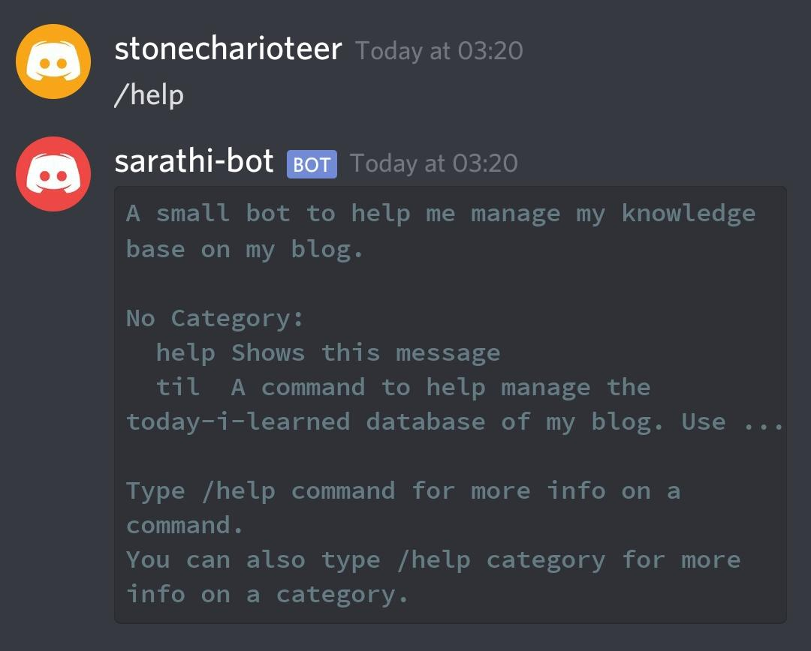
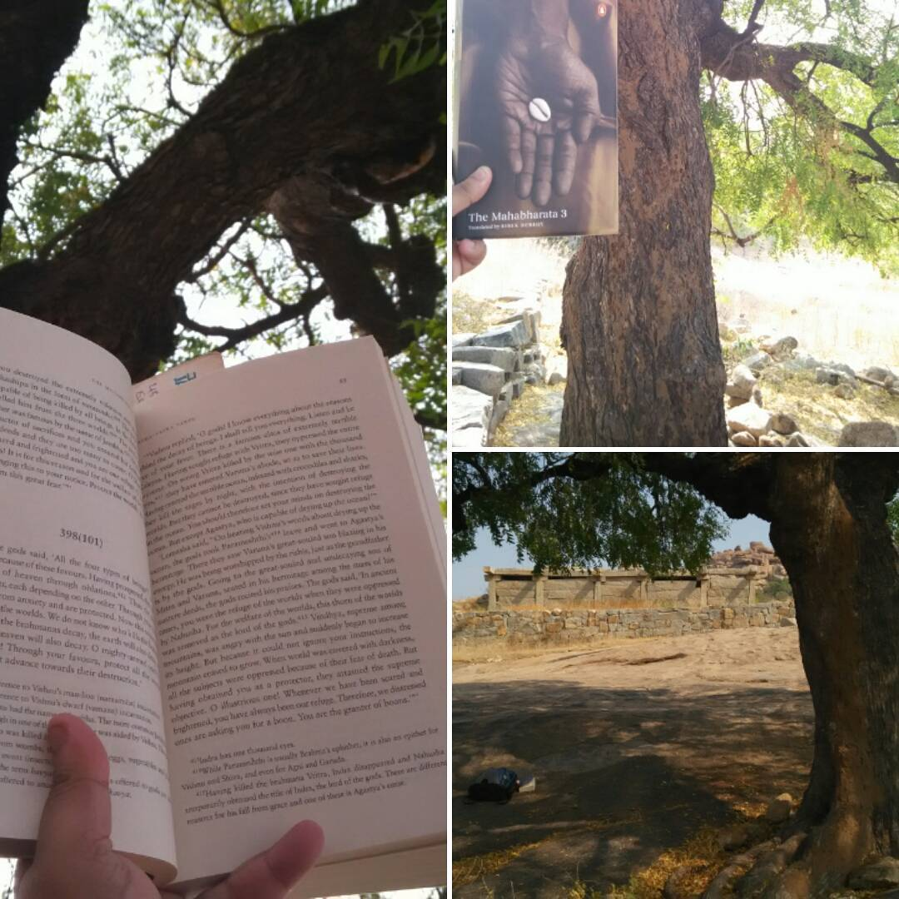

All Posts
So Far So Rust
- Jul 13, 2022
- Tech
I’ve been using Rust as my primary programming language for 145 days now. In this article, I’m going to discuss my journey so far.
Bipolar and ADHD – I Know Your Names Now
- Jun 27, 2022
- Life
For the longest time of my life I wondered if I have ADHD. I dismissed that feeling, and it didn’t really affect me. I functioned, and I had moments of sheer inspiration. I called this many, many things. At one point, I chalked my bursts of productivity off to me being a person who likes operating in bursts.
The Two of Three Rule
- May 19, 2022
- Tech
How do you decide when to join a company, when to stay and when to leave?

Learning Rust
- Mar 28, 2022
- Tech
I’ve been trying to learn Rust for nearly 3 years now. Oddly, I find that the process has been extremely similar to how I’ve learnt Python. I tried picking up Python in 2010, and I couldn’t. I tried again in 2015, and I was finally ready. The process has been the same.
Using Non-Standard Jinja Templates
- Feb 18, 2022
- Tech
Apache Airflow uses Jinja templates for variable expansion and templating.
Whenever you write a DAG, you can use {{ }} blocks to expand variable
names, often using Airflow configurations or macros to fill in the values.
While that is great, you get a problem when you have Jinja templates inside
your code that has nothing to do with Airflow.
Creating Fixed Length Iterables in Python
- Jan 24, 2022
- Learning
If you want to create an iterable of a fixed length in python, use
collections.deque with the maxlen parameter.
Documentation Without Assumption
- Jan 16, 2022
- Tech
Whenever you write documentation, always try to focus on your audience. I’ve written about this (in my embarassingly half-complete idea about documentation), and I’m always going back to this. Documentation is about caring. I see a lot of developers who don’t write good documentation. But what is good documentation?
A System for Getting Better at Leetcode
- Jan 16, 2022
- Learning
For the longest time I was in denial about the benefits of studying algorithms and data structures. I wasn’t fascinated by Leetcode or other forms of competitive coding. It felt drab to me. I’d rather build something using programming. That’s more fun. Companies should consider my skills based on Github.
Vagrant
- Jan 10, 2022
- Tech
I’m late to the Vagrant train. I must have heard about it in 2014, but I’ve never bothered to look it up. I’m using it lately to test out my dotfiles, which I’m creating Ansible playbooks for. It’s convenient.
Python - A Reflection in 2022
- Jan 07, 2022
- Tech
I built my career on Python. In 2014, I had to make a decision. It was between either choosing to learn Ruby or Python. I was helping to create a tool and process for a team of content writers at Flipkart – I was a content writer there, and I’d used Excel for it at first, until Excel couldn’t handle the queries anymore. I called my friend who recommended Python. I learnt Python, almost over a course of a weekend, and I was making a PyQT4 application in a few weeks.
Onward
- Jan 03, 2022
- Life
I’m beginning this year hopeful. It’s been a long three years, and I have a lot to do. I’m focussing this year on doing things, which is something I’ve said multiple times last year as well. But this year, I’m working on fixing this.
Learning Golang
- Dec 28, 2021
- Learning
Despite my numerous failed attempts at learning golang, I’ve decided to bite the bullet and try yet again. This time, Learn Go With Tests is my favorite resource.
Memories of a Circulating Library
- Dec 27, 2021
When I was 9, my mother enrolled me into a circulating library in Jayanagar 4th Block. It was named Serene, and it was operating out of what was a smallish garage. The librarian, whose name I cannot really recall (I think it was Kumar or some other common Kannadiga name), was thin, silent and didn’t strike me as someone who read himself. It was a living for him.
Reflections on Doing More
- Dec 21, 2021
- Life
This post originally started off as something on how I’m trying to learn more. It meandered into Dear Diary territory, but there’s a certain flow to it, in my opinion. I’m keeping it as it is, and releasing it without edits.
Advent of Code 2021
- Dec 07, 2021
- Tech
I’m working on this year’s Advent of Code problems. I have wanted to work on this live for several years now, and this year, I’ve started allocating some time to this every day.
Updates
- Dec 06, 2021
- Updates
I’ve been silent for a while, not because I haven’t been writing, but because I’ve been writing. I’ve been working on a few blog articles, primary of which is a rather long article on Oso and how you can use it for authorization. This is an article I’ve been working on for a few months, and it is rather long. I want to get it out there this month, since I’d originally promised the article to the folks at Oso in Jan 2021.
I joined Merkle Science as an Architect
- Aug 24, 2021
- Updates
I left Visa on July 21, and joined Merkle Science as an Architect and Lead Software Engineer. I’m working with the Data Engineering team, and have some cross-over work with the Product team as well. I am excited for this shift since this is the first startup I’m working at as a developer, and this comes after 2 years at a large corporation. I’m also excited since I knew nothing about Cryptocurrencies and Decentralized Finance, and today I can say I understand at least a little.
Empathy in Tech
- Jul 25, 2021
- Thoughts
I’ve been meaning to write about empathy in tech for a long time. Oddly, this is a topic that I’m the most hesitant to write about, for personal reasons. I’m not the most empathetic person, and I have trouble understanding how to improve the things I say to my friends. However, the topic I’m talking about has more to do with teaching than it does with personal relationships outside of tech.
For Those Who Came in Late
- Jul 20, 2021
- Programming
This is a very personal post. It’s about my journey so far. A few of you might know this already, but I thought this is a good time to document this journey.
Setting up Neovim with Vim Plug and YouCompleteMe
- Jul 01, 2021
I’m moving to neovim for my primary editing purposes. VSCode has served me well, but I’m growing wearing of its growing pains. Some extensions don’t work well, and many things seem broken of late. Besides, I don’t really use the IDE features all that much.
A Weekend With Postgresql
- Jun 28, 2021
- Talks
I’ve wanted to read the postgresql documentation live, on video, for over a year now. This is the best time to do it.
Returning to the Craft of Programming
- Jun 03, 2021
- Update
I have not been working on side projects in a few months. I’ve been busy with life, family, and health. However, I finally feel ready to return to it.

A Personal Code
- May 01, 2021
- Personal
Explicit markup ends without a blank line; unexpected unindent.
How to Write Documentation - The README.md File
- Apr 30, 2021
- Tech
In the introduction post to this series, I discussed how to write a README.md
file in a git repository. I’m digging deeper into this here.
The Importance of Documentation
- Apr 28, 2021
- Tech
Nod if you’ve come across this before. You find an amazing software library that you can use for your project, whether at work or one of your many side-projects, and you find the documentation just lacking.
My Notes
- Mar 26, 2021
- Learning
I needed a place to collect my thoughts on various topics related to technology, in a slightly less-public manner. That’s where my new notes website comes in.
Reading the Mahabharata by the Tungabhadra
Explicit markup ends without a blank line; unexpected unindent.
David Beazley’s Courses
- Dec 25, 2020
- Review
Among other things, 2020 has been a window into opportunities I didn’t have before. Mostly with respect to time. I was able to rest, which given my penchant for workaholism, was something my mind deserved. I was also about to heal from burnout and come to terms with my job, which I’d just started in 2019. I needed the time to recharge, and ignore all the expectations I had set for myself professionally. I have been overwhelmed with immense Imposter’s Sydrome, and I needed a chance to get over it.
BangPypers Screencast On Security Headers
- Dec 09, 2020
- Talks
The video for my screencast has finally been uploaded. This was a screencast conducted by BangPypers. Here, I covered the topics I blogged about in [this article]({% post_url 2020-11-11-web-application-security %}).
Sarathi - A Personal Discord Bot
- Nov 30, 2020
- Show and Tell
I’ve been maintaining a TIL page for a while now, and while the idea is great, I have had some issues updating the sheet daily.
Keeping Your Work Laptop Awake
- Nov 24, 2020
- Tips and Tricks
Sometimes you’d like to keep your work laptop from sleeping, and for whatever reason, you might not be able to change your system’s power management rules. In this article, I show you how to get around that.
The Song of a Hero - Insomniac’s Spider-Man Miles Morales
- Nov 16, 2020
- Review
Of all the differences between the first Spider-Man game for the PS4 and Spider-Man Miles Morales, I did not expect to be wowed by the music.
Web Application Security with secure.py
- Nov 11, 2020
- Tutorial
A common pitfall when developing web applications is not knowing how to design a safe application.
secure.py is a great Python module that helps deal with the basic foundations of web application security.
A List of Podcasts I Follow
- Jul 23, 2020
- Journal
I didn’t listen to podcasts for a large part of my professional life. My friend Najeem introduced me to Talk Python, which was the first podcast I have ever listened to and enjoyed. Since then, I have found a lot of podcasts that I follow, and wanted to keep track of the episodes I love, as well as podcasts I love.

The STM32F401 Boards
- Jul 19, 2020
- Show and Tell
A while ago, a user posted a link to this repo on /r/mk.
Today I Learned Journal
- Jul 14, 2020
- Journal
I started a journal to maintain a list of things I am learning daily. This is mostly to just keep me on my toes, but also so that I can record everything I learn daily.
Managing Multiple Python Installations
- Jul 07, 2020
- Tutorial
If you are running a Linux or Mac machine and would like to run multiple versions of Python, you probably have been told that you need to stop trying to use package managers to run Python.
I am taking the MIT Distributed Systems Course
- Jul 07, 2020
- Learning
To learn more about how distributed system design works, I have decided to spend time with 6.824 - Distributed Systems.
K3S on the 8GB Raspberry Pi 4 with Docker-CE
- Jul 04, 2020
- Show and Tell
I finally managed to fix the issue I was having with K3S on the Raspberry Pi 4. Turns out, there is an issue with how Docker does IP configurations.
Blog Updates
- Jul 04, 2020
- Update
I am ditching Digital Ocean since I do not need a droplet to run the blog. Github pages with Jekyll and the YAMT theme suffice for now.
Configuring Pip to Work in Enterprise Environments
- Feb 29, 2020
- How To
The hardest thing about using package managers within an enterprise is getting them to download the packages you need on the office network. Oftentimes, you are hindered by SSL errors, and other times you get bogged by DNS errors.
No Leaf Clover
- Feb 02, 2020
- Sep 01, 2020
- Health
Explicit markup ends without a blank line; unexpected unindent.
The Sound of Music
- Dec 11, 2019
- Health
Explicit markup ends without a blank line; unexpected unindent.
PyCon India 2019 Talk - MicroPython
- Oct 12, 2019
- Talks
I finally spoke at PyCon India! It was a great experience. I was a bit nervous speaking as someone who had just lost an ear, but I am glad that the organizers had arranged the “silent conference”. The headphones supported mono-channels, which is a blessing for someone who is single-sided deaf, like me.
Leonardo - Generating Product Unique Specification Images Using Python
- Oct 28, 2018
- Show and Tell
When I was at Flipkart in the Content Team, my manager brought up an interesting project for the Graphic Designers in our team. He said Flipkart was going to invest in the creation of product images that would replace content. It was going to be an image where a prospective buyer could see the key specifications of the project arrayed around the product image in a neat fashion.

Learn the Kana Using Python and a Raspberry Pi
- Sep 09, 2018
- Show and Tell
I have been attempting to learn Nihongo. It is a failing attempt really, since I have so little time lately.


Dear Mr. Debroy
- Mar 22, 2017
- Writing
Explicit markup ends without a blank line; unexpected unindent.
Reading the Mahabharata by the Tungabhadra - Day 20
Explicit markup ends without a blank line; unexpected unindent.
Reading the Mahabharata by the Tungabhadra - Day 19
Explicit markup ends without a blank line; unexpected unindent.
Reading the Mahabharata by the Tungabhadra - Day 18
Explicit markup ends without a blank line; unexpected unindent.

Reading the Mahabharata by the Tungabhadra - Day 17
Explicit markup ends without a blank line; unexpected unindent.

Reading the Mahabharata by the Tungabhadra - Day 16
Explicit markup ends without a blank line; unexpected unindent.
Reading the Mahabharata by the Tungabhadra - Day 15
Explicit markup ends without a blank line; unexpected unindent.

Reading the Mahabharata by the Tungabhadra - Day 14
Explicit markup ends without a blank line; unexpected unindent.

Reading the Mahabharata by the Tungabhadra - Day 13
Explicit markup ends without a blank line; unexpected unindent.

Reading the Mahabharata by the Tungabhadra - Day 12
Explicit markup ends without a blank line; unexpected unindent.

Reading the Mahabharata by the Tungabhadra - Day 11
Explicit markup ends without a blank line; unexpected unindent.
Reading the Mahabharata by the Tungabhadra - Day 10
Explicit markup ends without a blank line; unexpected unindent.

Reading the Mahabharata by the Tungabhadra - Day 9
Explicit markup ends without a blank line; unexpected unindent.
Reading the Mahabharata by the Tungabhadra - Day 8
Explicit markup ends without a blank line; unexpected unindent.

Reading the Mahabharata by the Tungabhadra - Day 7
Explicit markup ends without a blank line; unexpected unindent.

Reading the Mahabharata by the Tungabhadra - Day 6
Explicit markup ends without a blank line; unexpected unindent.
Reading the Mahabharata by the Tungabhadra - Day 5
Explicit markup ends without a blank line; unexpected unindent.

Reading the Mahabharata by the Tungabhadra - Day 4
Explicit markup ends without a blank line; unexpected unindent.

Reading the Mahabharata by the Tungabhadra - Day 3
Explicit markup ends without a blank line; unexpected unindent.

Reading the Mahabharata by the Tungabhadra - Day 2
Explicit markup ends without a blank line; unexpected unindent.

Reading the Mahabharata by the Tungabhadra - Day 1
Explicit markup ends without a blank line; unexpected unindent.